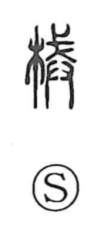

械

Uncategorized
Kun: kase, karakuri | On: kai
shackles ・ implements ・ machinery
Explanation
A phono-semantic character, 械 combines 木, suggesting a wooden implement, with 戒 as the phonetic element that gives the reading kai and a sense of restraint. Early definitions make it “shackles” (kase), punitive restraints for the hands and feet. From this core it broadened to mean implements and contrivances, and in classical military contexts it denotes war machines: in Sunzi’s chapter On Planning an Attack, one prepares 器 (tools) and 械 (machines), with 器械 serving as a general term for offensive and defensive equipment. In later usage the standard word for a machine is 機械—機 being originally a loom—capturing the idea of a system working by parts fitted together; since 器 at root names ritual vessels, 機械 is the more fitting spelling.